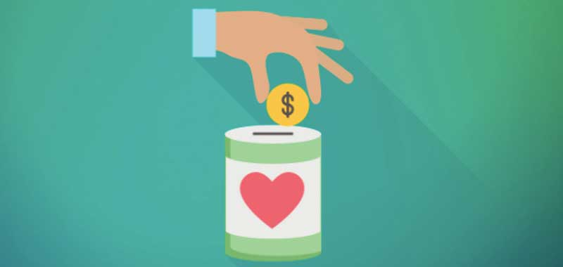
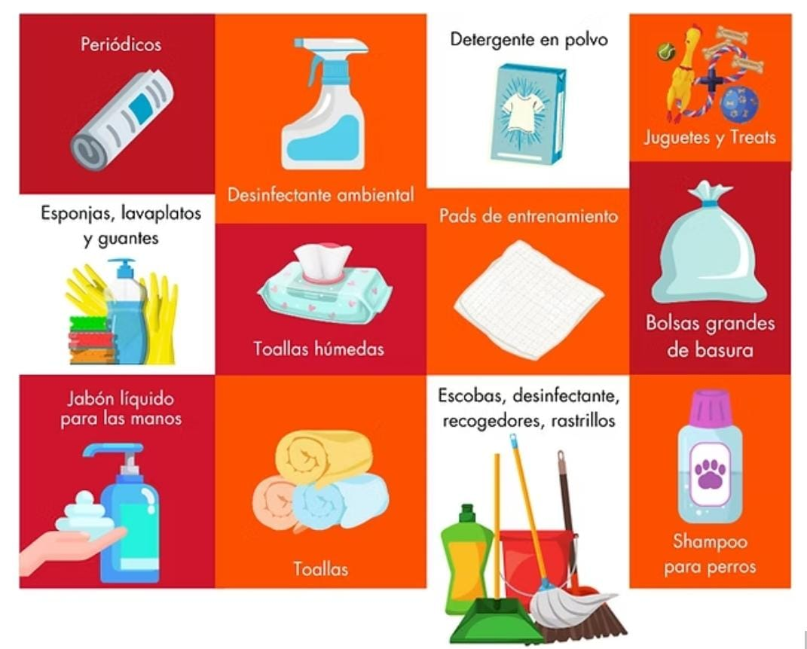
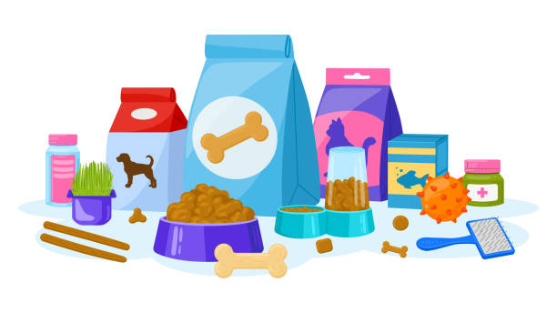
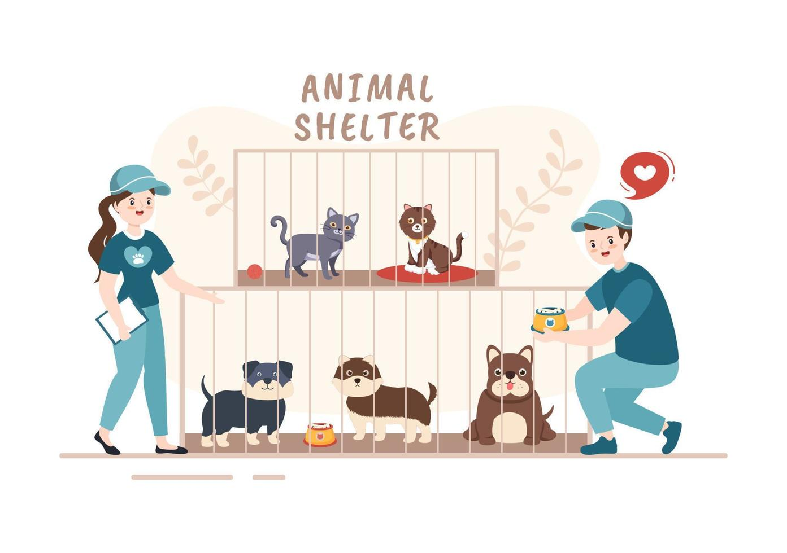

Únete a la Causa
Aunque sea pequeño, tu apoyo tiene un gran impacto. 🐾🐾 ¡Ayuda a cambiar vidas hoy!

Donación Monetaria
Apoya económicamente nuestro refugio para cubrir gastos como atención veterinaria, alimentación y cuidados esenciales. ¡Cada aporte salva vidas!, el numero de cuenta para realizar las donaciones es 72493-15682

Donación de Suministro
Colabora con productos como shampoo para mascotas, arenas sanitarias, camas, juguetes o productos de limpieza. Estos artículos son clave para su bienestar y comodidad mientras esperan un hogar.

Donación de Alimentos
Ayuda a mantener sanos y bien alimentados a nuestros peluditos donando croquetas, comida húmeda o suplementos nutricionales. Tu contribución llena sus pancitas y sus corazones.

Voluntariado
Dedica tu tiempo para hacer la diferencia: ven a limpiar áreas comunes, pasear perritos, jugar con los gatitos o ayudarnos en eventos de adopción. ¡Ellos te lo agradecerán con mucho amor!
!Unete Aquí¡